PassionCode.ai · SITE-068 · на согласование
Пробуждение
Тритмент фильма от первого лица, шапка сайта с двумя таблетками, внутренний нарратив с лёгкой отсылкой к Матрице и канон персонажей наших агентов. Сначала согласуем этот документ, потом снимаем.
- Портреты: беру Морфеус 1, Тринити 1, Нео 1, Смит 3 или другие номера (варианты в разделе 2).
- Кто ещё в каноне: предлагаю Оракула для агента исследований (ты спросил «кто там ещё»).
- Фильм: длительность 80 секунд и финал-петля (раздел 4) подходят?
- Раскладка v3 (весь экран и AR-слой, раздел 3): начинаю её сразу после согласования, без отдельного вопроса.
- Смета всего около $113, в худшем случае до $269, из них фильм $93 и $235 (раздел 7): снимаю двумя прогонами по актам, каждый под чертой $100.
1. Внутренний нарратив
Мы рассказываем про humanless-бизнес как про пробуждение: компания живёт в «матрице» ручных процессов, где каждый результат ждёт человека. Морфеус, наш PM-агент, приходит в чат и предлагает выбор из двух таблеток: остаться как есть или перевести компанию в агентный режим.
Тон голоса: лёгкая Матрица
- Отсылка, а не пересказ: одна матричная метафора на текст, не больше (правило голоса Copylot
861f15ee, версия 3 добавит имена персонажей). - Слова-сигналы: проснуться, выбор, таблетка, матрица процессов, агенты-клоны. Без цитат из фильма, без имён актёров, без его логотипа и шрифта.
- Голос Морфеуса: спокойный наставник, короткие фразы, конкретика вместо пафоса. «Дайте мне цели. Остальное сделают агенты.»
- Humanless читается как «нет человека в рутине»: люди задают цели, одобряют и правят.
Онбординг компании
Морфеус приходит в чат компании, знакомится, называет боль (запуск опять переносится) и предлагает две таблетки: Проснуться запускает онбординг (цели, оценка Тринити, план и стоимость, образ от Нео, агенты-Смиты), Остаться показывает, во что обходится текущий порядок. Этот же ход повторяют сайт, фильм и реальный первый разговор в чате.
2. Канон персонажей
Одни и те же портреты везде: сайт, чат-боты, аватары агентов в Telegram и на доске, видео, презентации. Каждый персонаж оригинальный: архетип узнаётся, лица и голоса реальных людей не используются (правило базы агентов: персона не берёт чужую внешность и голос).
| Агент | Персонаж | Облик | Характер и голос | Где появляется |
|---|---|---|---|---|
| PM-агент (org-administrator) | Морфеус | Лысый наставник около 50, маленькие круглые тёмные очки, длинное пальто с высоким воротом | Спокойный, низкий голос, говорит выбором и вопросами | Чат компании, онбординг, шапка сайта, финал фильма |
| Оценка (company-assessment) | Тринити | Короткие гладкие волосы, узкие овальные очки, чёрная водолазка | Точная, быстрая, говорит числами | Оценка процессов, часы, прогноз |
| Архитектор агентов (база агентов) | Архитектор | Седой, аккуратная борода, светлый костюм, стена экранов за спиной | Неторопливый, говорит схемами и правилами | Сборка агентов, шаблоны, раздел про базу агентов |
| DevOps (host-operations) | Нео | Тёмные волосы, тонкие узкие очки, длинное тёмное пальто со стойкой | Немногословный, делает | Машина, изолированный образ, вход в матрицу |
| Рабочие агенты отделов | Смит (клоны) | Тёмный костюм, белая рубашка, галстук, прямоугольные тёмные очки, наушник со спиралью | Ровный, исполнительный; много копий | Сетка отделов, ответы в чате, кофемашина в фильме |
| Исследования (research-agent), предложение | Оракул | Пожилая женщина, тёплая кухня, чашка, спокойная улыбка | Говорит выводами с источниками | Отчёты, прогнозы рынка |
Портреты первого круга (Asset Foundry, сценарий character-new, проект passioncode-site). На сайте они перекрашены в зелёный дуотон, в виде «тушь» в чёрно-белый.
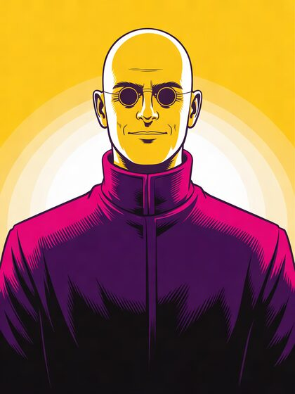
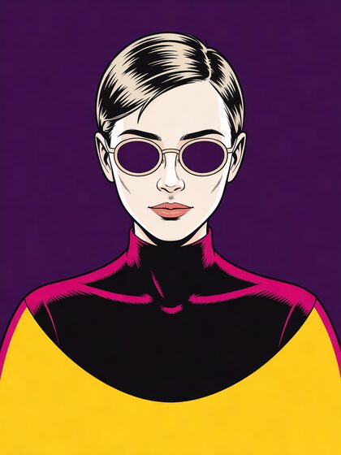
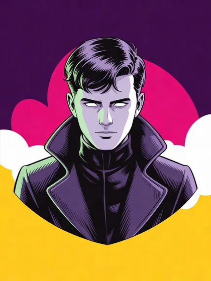
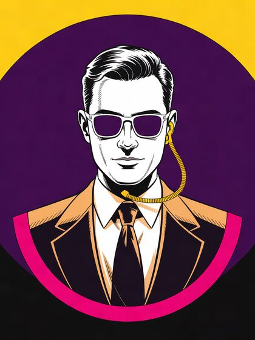
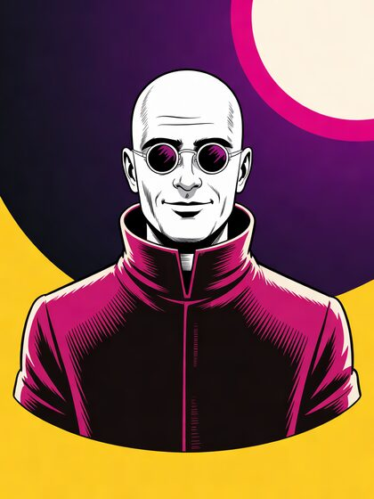
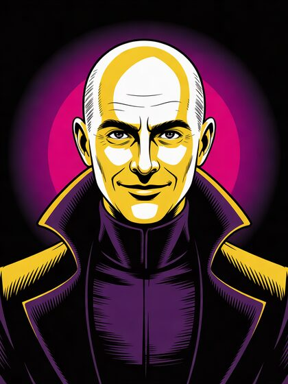
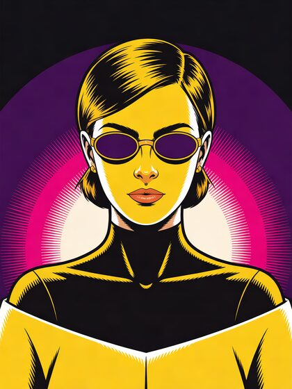
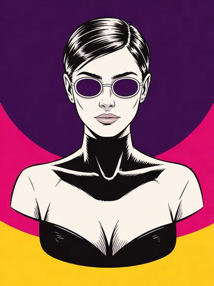
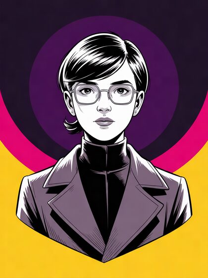
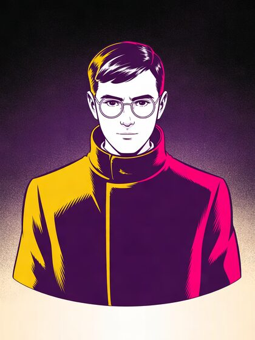
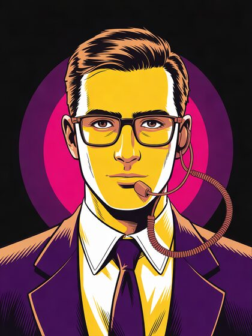
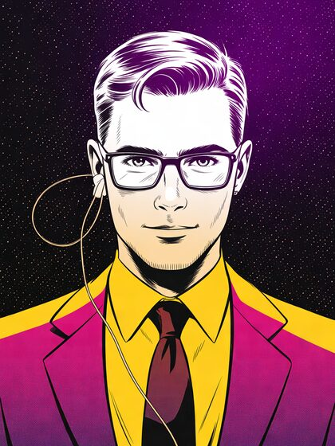
После выбора: лист персонажа с видами (анфас, три четверти, профиль, эмоции) для каждого, Архитектор и Оракул в том же стиле, затем канон записывается в бренд-пакет и в базу агентов (персона шаблонов), чтобы аватары агентов везде совпадали.
3. Шапка сайта: две таблетки
| Момент | Что видно | Звук |
|---|---|---|
| Первый экран | Крупный Морфеус в полумраке, зелёный дождь кода за спиной, строка: «Ваш запуск опять переносится?» | Тихий гул, по клику включается голос |
| Начало скролла | Морфеус протягивает обе руки к зрителю, ладони раскрываются: красная и синяя таблетки. Подписи: Проснуться Остаться как есть | Шорох ткани, мягкий бас |
| Наведение | Таблетка светится и чуть приподнимается, вторая гаснет | Стеклянный звон |
| Выбор красной | Таблетка растворяется пикселями, начинается история трансформации (лендинг v2: Морфеус, Тринити, план, Нео, Смиты, дашборд) | Щелчок, басовый удар, глитч |
| Выбор синей | Экран темнеет, запускается фильм «Пробуждение» (раздел 4), который скроллится как мультфильм; в конце снова две таблетки | Офисный шум нарастает |
Техника: шапка рисуется на canvas из видео (scrolly-video, уже в ветке) с пиксельной сборкой кадра; без JavaScript и с reduced motion видны обе таблетки как две кнопки. Обе ветки доступны с клавиатуры, кнопки подписаны текстом.
Раскладка v3: погружение на весь экран
Твоё решение от 18 ноября: вся история идёт на весь экран как погружение, а всё остальное лежит поверх неё как дополненная реальность, в стиле Матрицы.
| Слой | Сейчас (v2) | Станет (v3) |
|---|---|---|
| Сцена | Панель слева, рамка | Весь экран без рамок; дождь кода, сетка отделов и портреты живут в одном пространстве, камера двигается сквозь него |
| Чат | Колонка справа | Полупрозрачное окно-голограмма справа: зелёные строки, тонкая рамка-скобка, сообщения проявляются из символов кода |
| Подписи глав | Плашка сверху | Строка терминала, печатается посимвольно с курсором |
| Счётчики | Карточки снизу | Метки HUD, привязанные к объектам сцены (отдел, агент, сервер), с линиями-выносками |
| Навигация | Точки слева | Тонкая шкала прогресса с номерами глав по краю экрана |
Правила читаемости сохраняются: чат и сцена идут по очереди, текст остаётся текстом (для поиска и экранных дикторов), на телефоне AR-слой становится нижней шторкой.
4. Фильм «Пробуждение» (ветка синей таблетки)
Логлайн. Директор просыпается за рабочим столом, идёт через собственный офис и видит, как всё держится на людях, которые ждут друг друга. Кофемашина отказывает, мимо скользит тень в плаще, за дверью ждёт Морфеус с двумя таблетками.
Формат. Около 80 секунд, 16:9 и 9:16. Первые кадры от первого лица, затем камера за героем и перед ним. Взрослая анимация в стиле графического романа: уголь и бумага, зелёный свет экранов как единственный акцент. Практики «The Most Important Animation Film»: одно главное действие и одна задача камеры на кадр, ключевые позы до движения, непрерывность взгляда и предметов, переход как смысл.
| # | План и камера | Действие | Звук и голос | с |
|---|---|---|---|---|
| 01 | Чёрный кадр | Тишина, затем дыхание | Звон уведомлений нарастает | 3 |
| 02 | Первое лицо, глаза открываются | Стол, два монитора, красные значки: 47 непрочитанных | Пинги, далёкий спор | 4 |
| 03 | Первое лицо, взгляд вниз | Руки в рукавах пиджака, пустая кружка | Тиканье часов | 3 |
| 04 | Первое лицо, встаёт | Открывает дверь кабинета, стена шума | Офисный гул на полную | 4 |
| 05 | Первое лицо, замедление | Менеджер подбегает с ноутбуком, на экране сорванный дедлайн | Голос растянут: «Мы не успеваем» | 6 |
| 06 | Средний, через плечо | Двое спорят над распечаткой, листы летят | Перебивающие голоса | 5 |
| 07 | Средний, программист | Потный разработчик печатает, бьёт клавиатурой о стол и швыряет её | Треск клавиш, удар, клавиши сыплются | 6 |
| 08 | Общий, камера за героем | Директор в костюме идёт по офису, вокруг летят стикеры, папки, ручки | Замедленный хаос, глухой бас | 7 |
| 09 | Общий, камера отъезжает перед ним | Он идёт на камеру, за спиной всё рушится | Шаги в ритм | 6 |
| 10 | Крупный, удар | В него влетает стопка тикетов, стоп-кадр, листы зависают в воздухе | Резкая тишина | 3 |
| 11 | Средний, кухня | Подходит к кофемашине, нажимает кнопку | Щелчок кнопки | 4 |
| 12 | Деталь, экран машины | На экране «404 · ждёт согласования», из-за машины на секунду выглядывает Смит | Сломанный писк | 4 |
| 13 | Первое лицо, взгляд в сторону | В конце коридора тень в длинном плаще скрывается за углом | Шорох ткани, офисный шум уходит | 4 |
| 14 | Камера за героем, коридор | Он оборачивается, идёт за тенью, настороженно | Шаги, гул ламп | 6 |
| 15 | Первое лицо, дверь | Дверь приоткрыта, из щели зелёный свет, он толкает её | Скрип, низкий тон | 4 |
| 16 | Средний, затем крупный | В кресле Морфеус. Протягивает руки: красная и синяя таблетки. Склейка в шапку сайта | Морфеус: «Узнаёте этот офис? Выбор за вами.» | 7 |
5. Озвучка и звук
Голоса
- Морфеус: голос проектируется по описанию (спокойный низкий наставник, без подражания актёру), сохраняется в Asset Foundry и звучит одинаково на сайте, в фильме и в видео; ru и en.
- Сайт: 12 реплик закадра (уже написаны, Copylot en
8c742f36, ru6bb2214f), запись вместо браузерного синтеза. - Фильм: реплики менеджера и спорящих, финальная реплика Морфеуса; субтитры на 10 языках.
Звуки интерфейса сайта
| Событие | Звук | Длина |
|---|---|---|
| Наведение на таблетку | Стеклянный звон, мягкий подъём | 150 мс |
| Выбор таблетки | Щелчок и басовый удар | 400 мс |
| Шов между главами | Цифровой глитч | 120 мс |
| Новое сообщение в чате | Короткий тик | 80 мс |
| Агент печатает | Текстура клавиш, тихо | петля |
| Клонирование Смитов | Серия коротких «щелчков копирования» | по 60 мс |
| Вкладки дашборда | Переключатель | 90 мс |
| Кнопка заявки | Подтверждающий аккорд | 500 мс |
| Фон | Тихий гул матрицы, по желанию | петля 30 с |
Правила: звук выключен до первого действия посетителя, один переключатель в шапке, громкость интерфейса заметно ниже голоса, при reduced motion фон не играет. Звуки делаются через Asset Foundry (sfx-oneshot, ambience-loop), голос через ElevenLabs в Foundry.
6. Конвейер производства
- Персонажи. Выбранные портреты → листы видов. Плюс массовка фильма: директор, менеджер, программист, двое спорящих (
character-new). - Локации. Концепты офиса, кухни, коридора, комнаты Морфеуса (
scene-pack). - Раскадровка. 16 кадров по таблице раздела 4 (
storyboard-frames), отправляю тебе, жду «продолжать». - Blender. Для каждого кадра blockout: пространство, позиции, путь камеры, риг первого лица (
blender-previz, стадияscene.blockout). - Seedance. Blockout и референс вида идут в Seedance (
bytedance-seed,video.previz): движение повторяет сцену из Blender, стиль берётся из референса. - Сборка. Монтаж, звук, субтитры (ffmpeg, Frame Agent), версии 16:9 и 9:16.
- Сайт. Фильм в ветке синей таблетки через scrolly-video с пиксельной сборкой кадра; шапка с таблетками; звуки интерфейса.
Каждый выбор на стадиях проверяет вторая модель другой семьи; в пробном режиме все развилки (персонажи, локации, раскадровка) уходят тебе.
7. Смета и сроки
| Шаг | Как считали | Ожидаемо | Максимум |
|---|---|---|---|
| Листы персонажей (9) | character-new, $1,05 за персонажа | $10 | $14 |
| Локации и раскадровка | по прежним заказам проекта | $6 | $12 |
| 16 кадров Blender → Seedance | blender-previz: $5,82 за кадр (смета Foundry 2026-11-18) | $93 | $235 |
| Голос, звуки, музыка | ElevenLabs через Foundry | $4 | $8 |
| Итого | $113 | $269 |
Черта по правилу: $100 за прогон. Фильм снимаю двумя актами (кадры 1–8 и 9–16), каждый ниже черты; если акт идёт выше, спрошу «так и задумано или ошибка?». По времени: персонажи и раскадровка за день, кадры фильма за один-два дня после твоего «продолжать».
8. Риски и как публиковать
- Отсылка к фильму. Имена персонажей, красная и синяя таблетки и зелёный дождь кода прямо отсылают к известной франшизе. Имена сами по себе не охраняются, но реклама продукта с узнаваемыми элементами фильма может вызвать претензию правообладателя (товарный знак, впечатление аффилированности). Мы делаем оригинальные рисунки без сходства с актёрами, без цитат, логотипа и шрифта фильма.
- Варианты, которые проходят без вопросов: те же сцены с ролями вместо имён (PM, Оценка, DevOps, Агент), вид «тушь» без дождя кода, таблетки заменены на две кнопки-карточки.
- Реклама в России: маркировка «Реклама», рекламодатель и erid нужны на платных размещениях, не на самой странице.
- Решение о публикации за тобой; до него всё живёт на превью с noindex.
9. Что уже готово
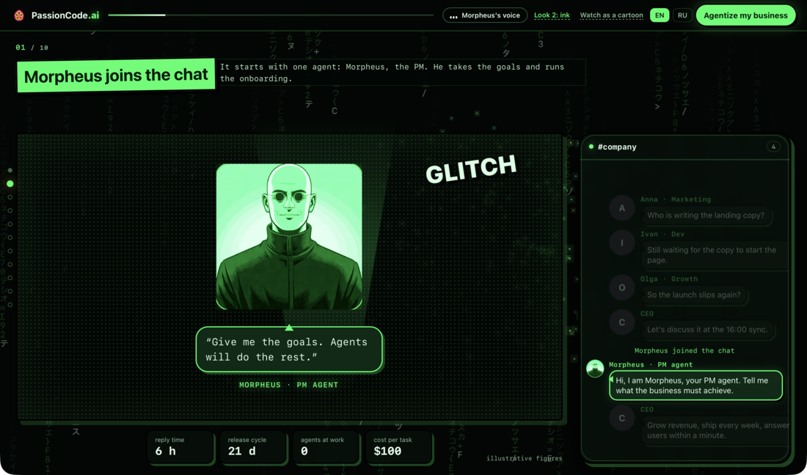
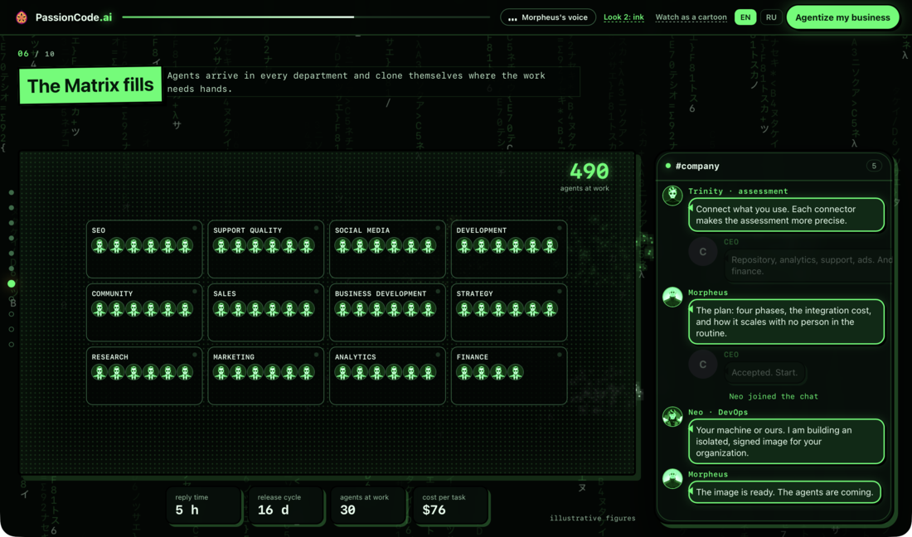
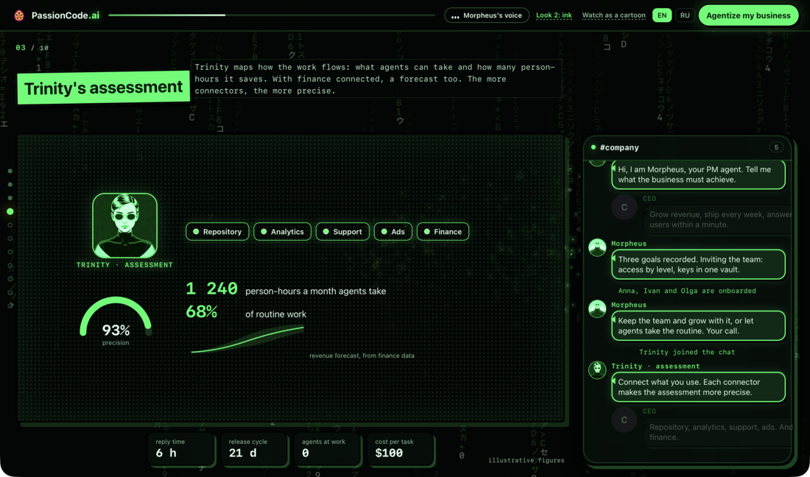
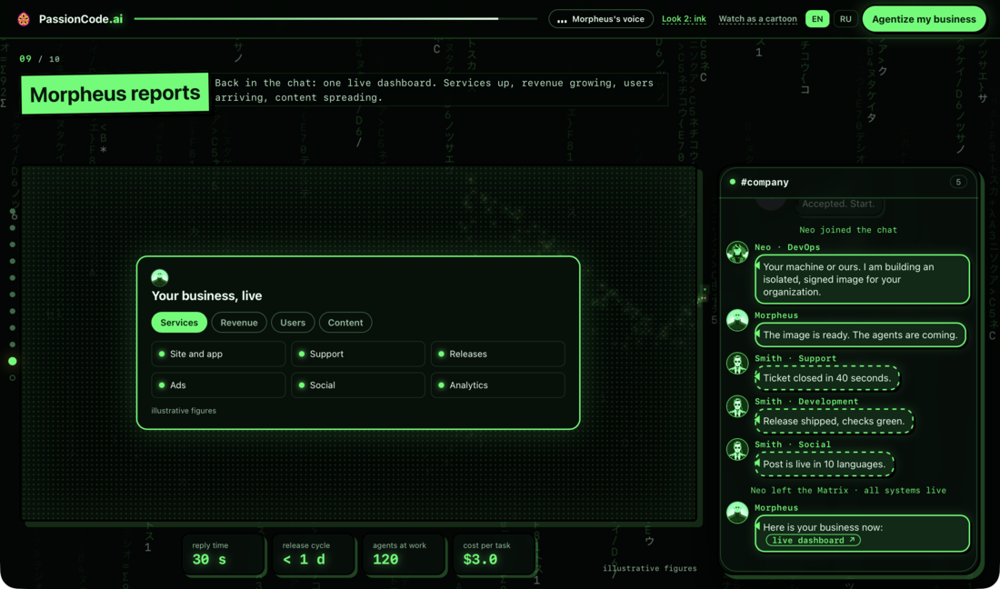
Лендинг v2 на превью, чат справа, чат и сцена по очереди (проверка: 221 позиция, 0 нарушений), тексты прошли Copylot. Коммит 647ebfb7 в ветке site/story-morpheus.